TRMS系统硬件产品介绍及现场安装说明（云后台）
1. ETP-II型采集器
1) 外型尺寸
246mm×70mm×50mm（长×宽×高）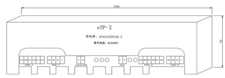
2) 接线端子说明
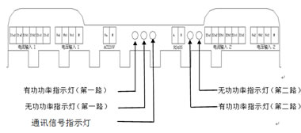
3) 适用范围
| 产品型号 | 序列号 | 适配互感器 | 电流范围 |
|---|---|---|---|
| ZFP-ETP-II | 0202 3013 0001 | KH30 | 0-600A |
| 0202 2511 0001 | KH25 | 0-100A | |
| 0202 1612 0001 | KH16 | 0-5A | |
| 0202 3014 0001 | QY40 | 0-800A |
2. 电流互感器
1) 外型尺寸、适用范围
| 型号 | 变比 | 工作电流 | 适用范围 |
|---|---|---|---|
| KH30 | 500A/100mA | 0-600A | IN=600A及以下等级出线回路 |
| KH25 | 100A/40mA | 0-100A | IN=100A及以下等级出线回路 |
| KH16 | 5A/5mA | 0-6A | IN》800A及以上等级出、进线回路 |
| QY40 | 600A/100mA | 0-800A | IN=800A及以下等级出线回路 |
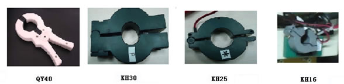
3. ETP-II型汇集器
1) 外型尺寸
250mm×270mm×86mm（长×宽×高）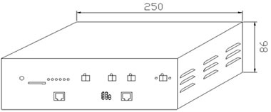
2) 接线端子说明
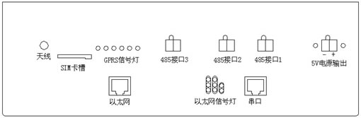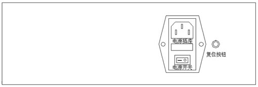
4. 连接电缆
1) 采样电缆
采样电缆由3只电流互感器、3根电压采样线组成。
2) 通讯电缆
通讯电缆是采集器和汇集器、采集器和采集器之间的连接通道。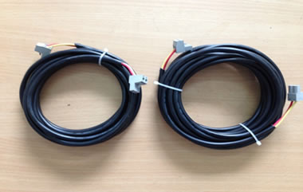
3) 电源电缆
电源电缆是采集器的工作电源线。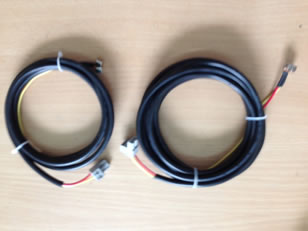
现场安装、调试
提供标准采集器、汇集器、连接电缆，客户可以快速完成现场安装。
1. 采集器安装
1) 将采集器吸附在开关柜侧面
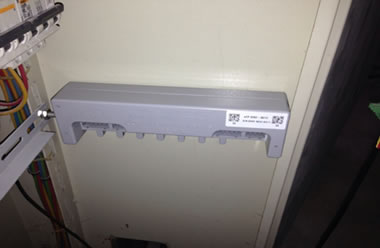
2) 插上电流采集回路插头。
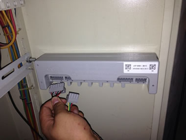
3) 插上电压采集回路插头
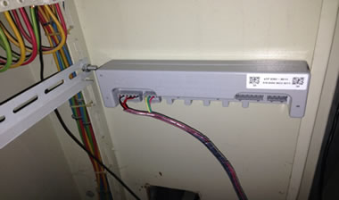
4) 插上工作电源插头
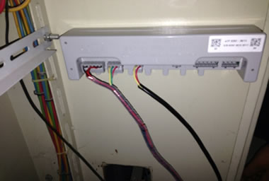
5) 插上通讯线插头
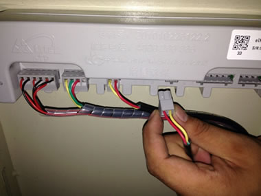
6) 采集器侧一个回路的接线完毕
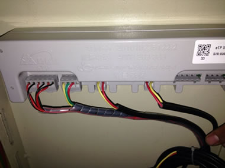
6) 采集器侧一个回路的接线完毕
2. 互感器的安装
1) 将互感器按相序分别套装在出线电缆上
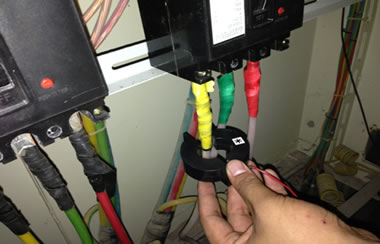
2) 3相3个互感器分别安装到位
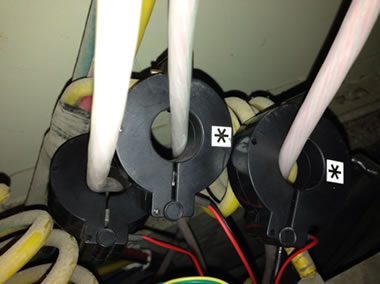
3. 电压线及采集器工作电源的搭取
1) 将电压取样磁钢按相序吸附在开关下桩头螺丝上
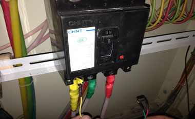
2) 3相3颗磁钢都吸附到位。
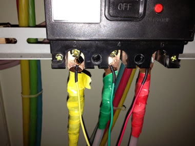
3) 工作电源零线吸附在零排上

4) 工作电源火线吸附在开关上桩头A相（开关跳闸后确保采集仍在工作状态）
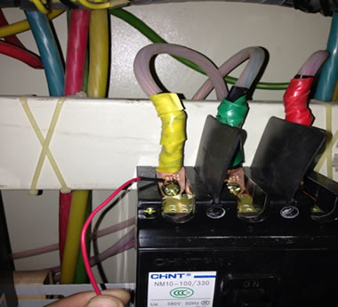
4. 汇集器的安装
1) 汇集器可以吸附或挂装在开关柜内
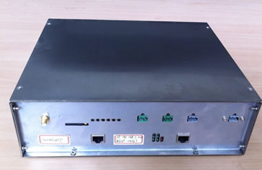
2) 汇集器电源接线
汇集器的工作电源为AC220V，电源可以同采集器工作电源相同从受总开关上桩头搭取
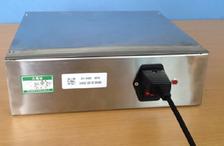汇集器电源接线、天线连接图
3) 汇集器通讯线连接
将“手拉手”连接后的通讯总线插接至汇集器485通讯接口（默认接口为485接口2）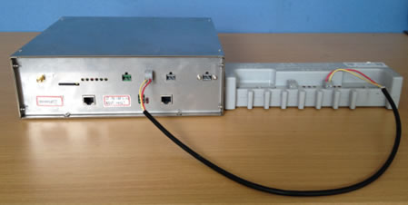
4) 汇集器的天线连接
汇集器天线连接完成后根据现场信号强度选择放置地点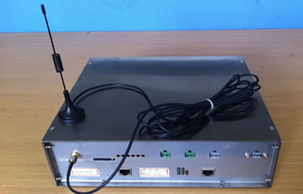
5. 现场调试
用专用调试数据线连接电脑和485总线
1) 打开软件——“TRMS调试工具”。
RMS调试工具界面
2) 点“模拟汇集器”后进入抄读采集器界面
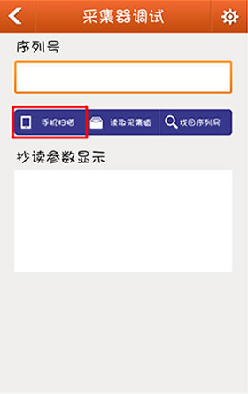图2 抄读采集器界面
3) 打开串口
波特率、数据位、校验位、停止位等参数已经默认，无须更改，直接点击“打开串口”即可建立与采集器的连接。
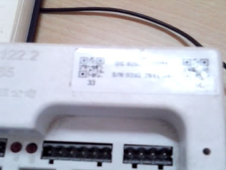4) 在“地址码列表”中输入12位序列号（请注意中间不带空格）
因采集器有两个通道，需要读取第二个通道的值时，需要将采集器的序列号值加1。如采集器的序列号为：0202 3013 0103，需要读取第一通道的值时，在地址码列表中输入：020230130103；需要读取第二通道的值时，在地址码列表中输入：020230130104；
5) 读取采集值
输入完地址码后，点击“读取采集值”即可获取到：电压、电流、有功电量、无功电量、功率因数、有功功率、电网频率等数据。
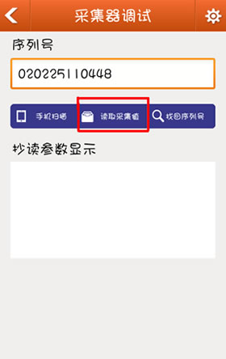图4 读取采集值界面
6) 核对采集数据
根据采集到的电流、电压、功率、功率因数等数据和现场实际数据逐一核对、验证采集数据的正确性。